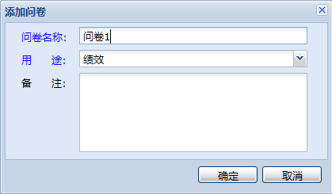
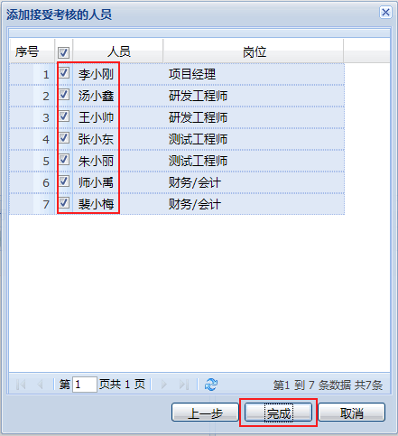

请根据您的角色选择相应流程:
Step1. 登录oKit前台，点击进入绩效管理模块
Step2. 切换到“问卷库管理”标签页，点击添加问卷
Step3. 输入问卷名称、用途等信息，点击确定

Step4. 选中问卷1，点击进入问卷设置界面
Step5. 点击添加考核方面及其子方面
添加完成后如下图：
Step6. 选中某个考核方面，点击添加题目
添加完成后如下图：
Step7. 选中一个选择型或评价型的题目，为其添加选项
添加完成后如下图：
Step8. 完成问卷设置，切换到考核管理标签页，点击添加考核批次
Step9. 输入考核批次信息，并点击确定
Step10. 在“岗位/角色管理”标签页中，点击添加岗位
Step11. 选择需要考核的岗位，点击“下一步”
Step12. 选择被考核的人员，点击“完成”

添加完成后如下图：
Step13. 选择某个接受考核的岗位，如“研发工程师”，点击添加考核角度
Step14. 选择考核角度、问卷，并输入权值，点击确定

继续添加不同的考核角度，添加完成后如下图：
Step15. 选择一个考核角度，如“上级”，点击添加考核角度执行人
添加完成后如下图：
Step16. 依照上例，继续为不同的被考核岗位添加考核执行角度，为不同的考核角度添加考核执行人，直到全部设置完成。
Step17. 选中好已设置好的考核批次，点击开始执行考核
Step18. 当所有参考考核人员均已提交考核问卷后，点击结束考核
Step19. 点击进入标签页“结果查询-结果反馈”，选中所有被考核人员，点击“反馈考核结果”。至此，本次考核结束
查看更多关于绩效管理的资料，请点击